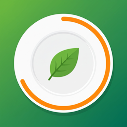

स्पोर्ट्स न्यूट्रिशन: प्रोटीन, BCAA, क्रिएटिन और विटामिन — कब और क्यों
स्पोर्ट्स सप्लीमेंट कोई जादुई पाउडर नहीं हैं, बल्कि खाने की कमी पूरी करने का आसान तरीका हैं। यहाँ बताया गया है कि किसके पीछे अच्छे वैज्ञानिक प्रमाण हैं, उसे कैसे और कब लें, और किसे छोड़ सकते हैं।
पहले खाना, नींद और ट्रेनिंग
कोई भी सप्लीमेंट खाने से मिलने वाली पर्याप्त कैलोरी और प्रोटीन, नियमित ट्रेनिंग और 7–9 घंटे की नींद की जगह नहीं ले सकता। सप्लीमेंट नतीजे के आख़िरी कुछ प्रतिशत देते हैं, शुरुआती नहीं।
प्रोटीन: कितना चाहिए
नियमित ट्रेनिंग करने वालों को आम तौर पर खाने समेत रोज़ शरीर के वज़न के प्रति किलो 1.4–2 ग्राम प्रोटीन की सलाह दी जाती है। 70 किलो के व्यक्ति के लिए यह लगभग 100–140 ग्राम है। लगभग 1.6 ग्राम/किलो से ऊपर मांसपेशियों को मिलने वाला अतिरिक्त फ़ायदा औसतन कम होता है।
- व्हे प्रोटीन जल्दी पचता है — ट्रेनिंग के बाद या स्नैक के रूप में सुविधाजनक।
- केसीन धीरे पचता है — सोने से पहले या जब लंबे समय तक खाना न मिले, तब अच्छा।
- प्लांट प्रोटीन (मटर, चावल, सोया) — शाकाहारियों और दूध न पचा पाने वालों के लिए। मटर और चावल का मिश्रण ज़्यादा पूरे अमीनो एसिड देता है।
सबसे ज़रूरी है पूरे दिन का कुल प्रोटीन। इसे 20–40 ग्राम की 3–5 सर्विंग में बाँटें। ट्रेनिंग के बाद की “एनाबॉलिक विंडो” पहले की सोच से कहीं ज़्यादा चौड़ी है: शेक पहले ही मिनट में पीना ज़रूरी नहीं।
BCAA: क्या ज़रूरी हैं
BCAA नौ ज़रूरी अमीनो एसिड में से सिर्फ़ तीन हैं। मांसपेशियाँ बनाने के लिए सभी चाहिए, इसलिए अगर आप पर्याप्त प्रोटीन खाते हैं, तो BCAA से लगभग कुछ नहीं जुड़ता। उतने ही पैसों में पूरा प्रोटीन या सामान्य प्रोटीन वाला खाना ज़्यादा देता है। खाली पेट ट्रेनिंग में 5–10 ग्राम का कुछ मतलब हो सकता है।
क्रिएटिन — सबसे ज़्यादा शोधित सप्लीमेंट
क्रिएटिन मोनोहाइड्रेट छोटे, तेज़ व्यायाम में ताक़त और पावर बढ़ाता है और सेट के बीच रिकवरी में मदद करता है। रोज़ 3–5 ग्राम किसी भी समय लें, बेहतर है खाने के साथ। “लोडिंग” (5–7 दिन तक रोज़ 20 ग्राम) जल्दी असर देती है, पर ज़रूरी नहीं।
पहले हफ़्तों में मांसपेशियों में पानी के कारण वज़न 1–2 किलो बढ़ सकता है — यह चर्बी नहीं है। स्वस्थ लोगों के लिए इस मात्रा में क्रिएटिन सुरक्षित है; गुर्दे की बीमारी में सिर्फ़ डॉक्टर की सलाह के बाद लें।
कैफ़ीन
कैफ़ीन सहनशक्ति और एकाग्रता बढ़ाता है। असरदार मात्रा है ट्रेनिंग से 30–60 मिनट पहले शरीर के वज़न के प्रति किलो 3–6 mg; कम से शुरू करें। वयस्कों को कॉफ़ी समेत सभी स्रोतों से दिन में 400 mg से ज़्यादा नहीं लेना चाहिए, गर्भवती महिलाओं को 200 mg से ज़्यादा नहीं। सोने से 6 घंटे पहले तक ही लें।
लंबी ट्रेनिंग में कार्ब्स
जेल और स्पोर्ट्स ड्रिंक 60–90 मिनट से लंबे व्यायाम के लिए हैं: हर घंटे लगभग 30–60 ग्राम कार्ब्स, पानी के साथ। जिम में एक घंटे की सामान्य ट्रेनिंग के लिए पानी काफ़ी है। ज़्यादा पसीना या गर्मी हो, तो इलेक्ट्रोलाइट्स मदद करते हैं।
विटामिन और खनिज
- विटामिन D सर्दियों में और कम धूप मिलने पर अक्सर कम होता है। आम तौर पर रोज़ 1000–2000 IU, वसा वाले भोजन के साथ; खुराक ख़ून की जाँच के बाद तय करना सबसे अच्छा है। डॉक्टर के बिना रोज़ 4000 IU से ज़्यादा न लें।
- ओमेगा-3 — अगर हफ़्ते में दो बार से कम तैलीय मछली खाते हैं: रोज़ लगभग 1 ग्राम EPA+DHA।
- मैग्नीशियम — रोज़ 200–400 mg, बेहतर है शाम को; ज़्यादा खुराक से दस्त हो सकते हैं।
- आयरन — सिर्फ़ जाँच के बाद। महिलाओं और शाकाहारियों में कमी ज़्यादा आम है, पर ज़्यादा मात्रा नुक़सान करती है।
- मल्टीविटामिन — एक जैसे या बहुत कम कैलोरी वाले खाने में सुरक्षा के लिए। कई उत्पाद एक साथ न लें।
किसे पहले डॉक्टर से पूछना चाहिए
अगर आपको गुर्दे, लिवर या दिल की बीमारी, हाई ब्लड प्रेशर या डायबिटीज़ है, आप गर्भवती हैं या स्तनपान करा रही हैं, आपकी उम्र 18 से कम है, या आप नियमित दवा लेते हैं (जैसे ख़ून पतला करने वाली), तो कोई भी सप्लीमेंट डॉक्टर से बात करके ही लें।

आज़माएँ EcoPlate: AI Calorie Counter. EcoPlate में प्रोटीन, क्रिएटिन, जेल और विटामिन खाने की तरह डायरी में दर्ज होते हैं, ताकि उनका प्रोटीन और कैलोरी आपके दिन में जुड़ें। “प्रोटीन” बार पर टैप करें और देखें कौन-से खाद्य लक्ष्य तक पहुँचने में मदद करेंगे।
और जानें →यह लेख केवल सामान्य जानकारी के लिए है और डॉक्टर की सलाह का विकल्प नहीं है।
स्रोत
- Jäger R et al. ISSN Position Stand: protein and exercise (2017)
- Morton RW et al. Protein supplementation and resistance training: a meta-analysis (2018)
- Wolfe RR. Branched-chain amino acids and muscle protein synthesis in humans: myth or reality? (2017)
- Kreider RB et al. ISSN Position Stand: safety and efficacy of creatine supplementation (2017)
- Guest NS et al. ISSN Position Stand: caffeine and exercise performance (2021)
- EFSA: Scientific Opinion on the safety of caffeine (2015)
- Maughan RJ et al. IOC consensus statement: dietary supplements and the high-performance athlete (2018)
- NIH Office of Dietary Supplements: Vitamin D fact sheet